320 samples instead of 960; samples 1-50 and 271-320
Image resolution for plots: 60
Fs = 16000, Fc = 0.875
Original audio at 48 kHz: | Resampled audio at 16 kHz: |
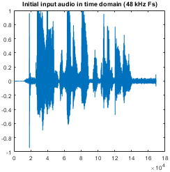 | 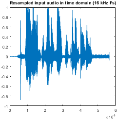 |
| Config | Scrambling | Reconstruction |
|---|---|---|
| [0 1 2 3 4 5 6 7 8 9] | 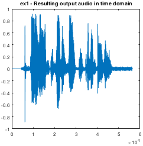 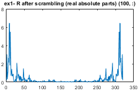 | 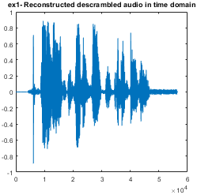 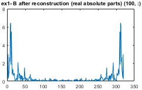 |
| [5 6 7 8 9 0 1 2 3 4] | 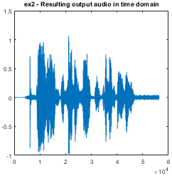 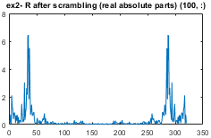 | 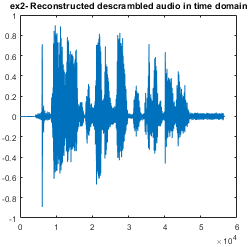 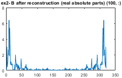 |
| [7 8 5 6 9 0 1 2 3 4] | 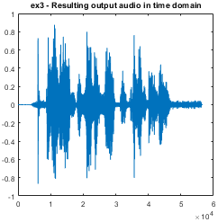 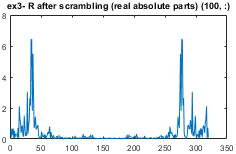 | |
| [5 6 7 8 9 2 3 4 0 1] | 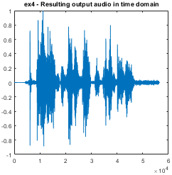 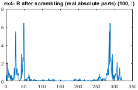 | 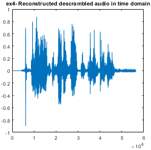 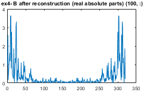 |
| [6 7 5 6 9 2 3 4 0 1] | 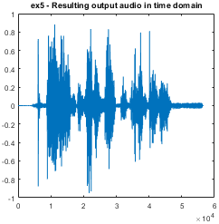 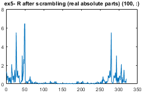 | 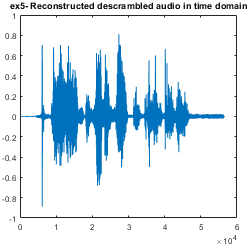 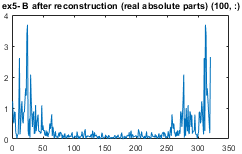 |